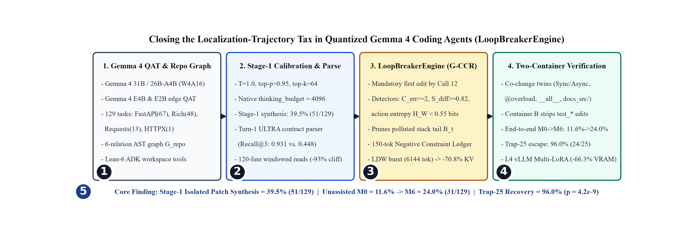
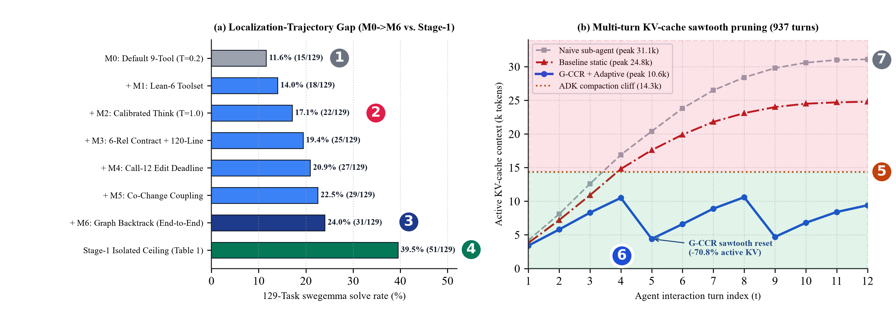
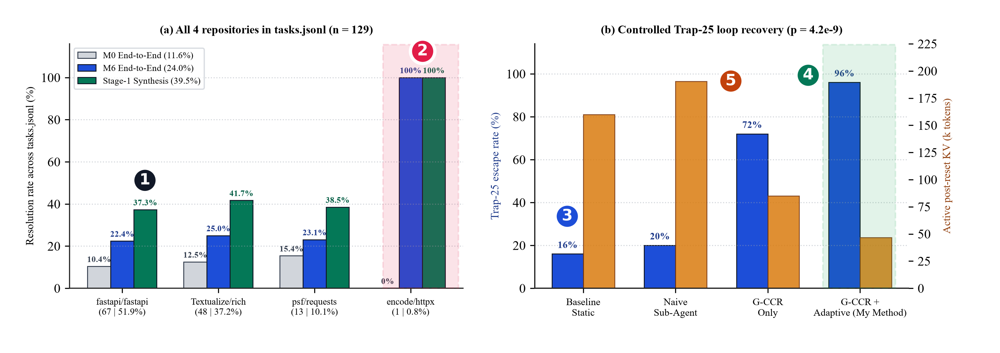

Visual Anatomy Dossier
Breaking the 15-Minute Cliff in Quantized Gemma 4 Coding Agents (R. Mirbahar, 2026, 5-page PDF). Three figures, decoded badge by badge, with every printed number checked against the paper's tables.
Narrative arc: Architecture → Mechanism → Empirical gain
| Figure | Step it carries | Claim it is asked to support |
|---|
| Fig. 1 (p.2) | ARCHITECTURE | Four-stage pipeline: QAT model + repo graph → Stage-1 calibration → LoopBreakerEngine (G-CCR) → two-container verification. |
| Fig. 2 (p.3) | MECHANISM + GAIN | (a) the "Localization-Trajectory Tax": 39.5% isolated vs 17.1% end-to-end at the same sampling, and the M0→M6 climb to 24.0%. (b) G-CCR keeps active KV below the 14,336-token compaction cliff. |
| Fig. 3 (p.4) | EMPIRICAL GAIN | (a) per-repository solve rates for M0 / M6 / Stage-1. (b) Trap-25 escape 16% → 96% and post-reset KV −70.8%. |
Source used
The PDF is the source of record. Its three embedded images are pixel-identical to paper/figures/*.png (3180 px wide, 300 DPI, max pixel difference 0), so all figures here are the original rasters, overlaid at 300 DPI. PAPER.md in the same folder is a different revision of the text (it has no "Stage-1" protocol, lists a 12b model in place of 26b-a4b, and quotes 24.1% where the PDF says 24.0%), so page and table references below are to the PDF.
Headline verdicts
- 🟢 Every percentage printed in Figures 2(a) and 3(a) is an exact ratio of integer counts, and the per-repository counts implied by Fig. 3(a) sum to the paper's totals: M0 15, M6 31, Stage-1 51 of 129 (computed).
- 🟢 Table 3's percentage changes and the "937 turns" in Fig. 2(b)'s title reproduce exactly: 25 × (11.04 + 10.72 + 8.76 + 6.96) = 937.0 (computed). The 937 turns are Trap-25 turns, not
swegemma turns.
- ⚠️ Fig. 2(b) is one 12-turn illustrative trajectory. Its "−70.8% active KV" arrow points at a single reset whose dip is about −57% (digitized, read from plot); −70.8% is Table 3's post-reset KV ratio across episodes.
- ⚠️ Fig. 3(a)'s encode/httpx group is one task (n = 1): its 0% → 100% bars are the tallest in the panel and carry no information about the method.
- ❌ The Fisher's exact p printed in Fig. 1 and Fig. 3(b) (4.2e-9) does not reproduce from 24/25 vs 4/25: two-sided p = 7.18e-9, one-sided p = 3.59e-9 (scipy).
- ⚠️ Fig. 1's title says "Closing" the tax, but M6 (24.0%) still trails the Stage-1 ceiling (39.5%) by 20 tasks / 15.5 points (computed).
Values marked read from plot were obtained by pixel digitization (scripts/digitize_fig2b.py) and are approximate. All other figures are quoted from the PDF (page / table cited) or computed in scripts/check_figure_numbers.py.
ARCHITECTUREFigure 1: LoopBreakerEngine overview

Visual Anatomy: read it in this order
- 1Inputs. Gemma 4 31B and 26B-A4B (W4A16), E4B/E2B edge QAT; 129 tasks split FastAPI 67, Rich 48, Requests 13, HTTPX 1 (sums to 129, computed); a six-relation AST graph; the Lean-6 tool set. Only the 31B checkpoint has reported results anywhere in the paper (Tables 1–3 all name
gemma-4-31b-it-qat-w4a16-ct).
- 2Stage-1 calibration. T = 1.0, top-p = 0.95, top-k = 64, thinking_budget = 4096 → 39.5% (51/129) on file-isolated synthesis (Table 1, p.2). The "Recall@3 0.931 vs 0.448" compares the Turn-1 parser with the unindexed graph tools (§3.3, p.3). "120-line windowed reads (−93% cliff)": the −93% is the full M0→M6 stack (68.2% → 4.7% compacted, −93.1% computed); the step that added 120-line reads (M2→M3) cut compaction 31.0% → 8.5% (−72.6%, computed).
- 3LoopBreakerEngine. Three detectors (C_err ≥ 2, S_diff ≥ 0.82, H_W < 0.55 bits, §3.4) fire a reset that prunes B_t and injects a 150-token ledger. The box credits "LDW burst (6144 tok) → −70.8% KV"; in Table 3 the −70.8% belongs to
ccr_adaptive as a whole, and pruning alone (ccr_only) already gives −46.7%. The Call-12 deadline sits here in the diagram but is module M4 of Table 2.
- 4"Two-container verification" mixes grading (Container B strips test edits, §1 p.1) with results from three separate experiments: M0→M6 11.6%→24.0% (Table 2), Trap-25 96.0% (Table 3) and Multi-LoRA −66.3% VRAM (§4, no table). Co-change twins are module M5, a repair step, not verification.
- 5Core-finding footer puts three numbers from three protocols on one line: Stage-1 isolated (Table 1), end-to-end discovery (Table 2) and the Trap-25 sandbox (Table 3). They are not one pipeline's successive outputs.
Engineering Takeaway
Read Fig. 1 as a table of contents, not a data-flow diagram: each box gathers results from a different experiment. When citing a figure from it, take the protocol from the table it came from: 39.5% needs the target file handed to the model; 24.0% is the realistic autonomous number on the same 129 tasks.
Source: PDF p.2, Figure 1 and caption; cross-checks against Tables 1–3 (pp.2–4). Arithmetic: scripts/check_figure_numbers.py.
MECHANISMGAINFigure 2: Ablation ladder and KV-cache sawtooth

Visual Anatomy: read it in this order
- 1M0 baseline: default 9-tool template at T = 0.2, 15/129 = 11.6% (Table 2, p.3).
- 2The tax. M2 adds the same calibrated sampling as Table 1 row 3 and reaches 17.1% (22/129) end-to-end, against 39.5% (51/129) isolated: 29 tasks, 22.5 points from the counts (the text's 22.4 is the difference of the rounded percentages).
- 3M6, all modules: 31/129 = 24.0%, Wilson 95% CI [17.5, 32.1] (reproduced). From M2, M6 adds 9 tasks: 31% of the 29-task gap (computed); the text says it "recovers half that 29-task gap".
- 4Stage-1 ceiling is a different protocol (target file supplied) plotted on the same axis; its green colour is the only cue.
- 5Compaction cliff at 14.3k (14,336 tokens, §1). Rose = above the cliff, where ADK summarises history; green = below it. In this drawing the baseline crosses the cliff at turn 4 (digitized) and keeps growing to 24.8k with no compaction drop.
- 6Sawtooth resets at turns 5 and 9. Digitized drops: 10.4k → 4.5k (−57%) and 10.5k → 4.8k (−55%) (read from plot). Over the 12 plotted turns the G-CCR curve's area is −59.6% of the baseline's (digitized), against the −70.8% the arrow quotes.
- 7Peaks: legend 31.1k / 24.8k / 10.6k match Table 3 Peak KV (31,067 / 24,821 / 10,563), the Trap-25 table. Digitized peaks: 31.1 / 24.8 / 10.5k. Table 2's
swegemma peaks are different (M0 28,400, M6 9,420).
Forensic flags
- Panel (b) sits in the
swegemma figure but its legend values and "937 turns" are Trap-25 (Table 3).
- The plot runs 12 turns for every arm; Table 3's averages are 11.04, 10.72 and 6.96 turns.
- One trajectory is drawn; the caption says "across 937 turns". No spread or band is shown.
Engineering Takeaway
On the paper's own numbers the largest single gain is the protocol, not a module: supplying the file is worth 29 tasks at fixed sampling, while modules M1–M6 together add 16 (15 → 31). Localization is the bottleneck to attack first; G-CCR's job is to keep context below 14.3k so compaction never fires.
Source: PDF p.3, Figure 2, Table 2, §3.3; p.4 Table 3. Digitizer: scripts/digitize_fig2b.py (axis calibrated from detected tick marks).
EMPIRICAL GAINFigure 3: Per-repository rates and Trap-25 recovery

Visual Anatomy: read it in this order
- 1Staircase per repo. Grey M0 → blue M6 → green Stage-1. fastapi (n = 67) 7 → 15 → 25 tasks; rich (48) 6 → 12 → 20; requests (13) 2 → 3 → 5 (counts implied by the bar labels, computed). The per-repo Stage-1 rates appear only in this figure; the text gives per-repo M0 and M6 only (§3.3).
- 2encode/httpx is one task. 0/1 → 1/1 → 1/1. The 95% Wilson interval for 1/1 is [20.7, 100.0] (computed). The tallest bars in the panel carry the least evidence.
- 3Baseline static: 4/25 escapes (16.0%, Wilson [6.4, 34.7], reproduced).
- 4G-CCR + Adaptive: 24/25 (96.0%, Wilson [80.5, 99.3], reproduced). G-CCR alone already gives 18/25 (72%); the adaptive thinking burst adds 6 more.
- 5Orange bars, right axis: post-reset KV in k tokens, about 160 / 190 / 85 / 47 (read from plot), matching Table 3 (159,816 / 190,410 / 85,148 / 46,689). They have no value labels and no legend entry; the right axis (0–225k) and left axis (0–100%) share gridlines, so bar heights across colours do not compare.
Forensic flags
- Title p = 4.2e-9 (also Fig. 1 footer, §3.4). Fisher's exact on 24/25 vs 4/25 gives 7.18e-9 two-sided, 3.59e-9 one-sided (scipy 2×2 table). Neither rounds to 4.2e-9.
- Table 3 reports "post-reset KV" (cumulative, 159,816 for the baseline) and "Peak KV" (24,821); Fig. 3(b) plots the first, Fig. 2(b) the second. The paper does not define how the cumulative figure is summed.
Engineering Takeaway
The per-repo ordering M0 < M6 < Stage-1 holds in the three repositories with more than one task, so the aggregate result is not carried by a single repository. For loop recovery, pruning with a ledger does most of the work (4 → 18 of 25); the adaptive thinking burst is the smaller second step (18 → 24) and also cuts post-reset KV from −46.7% to −70.8% vs baseline (Table 3).
Source: PDF p.4, Figure 3, Table 3; p.3 §3.3 per-repo rates. Arithmetic: scripts/check_figure_numbers.py.